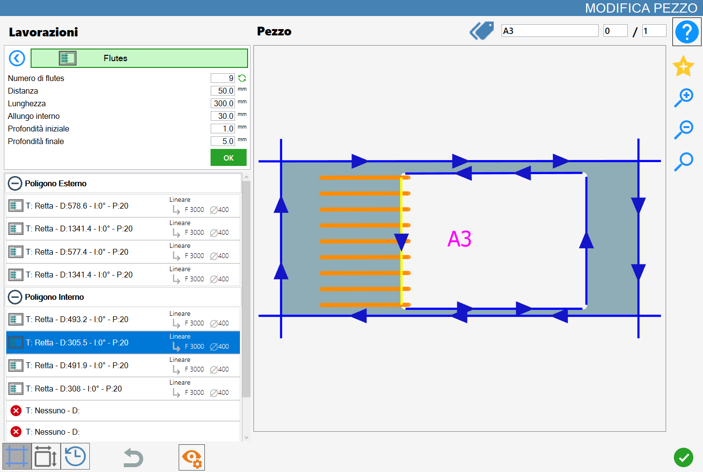
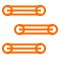
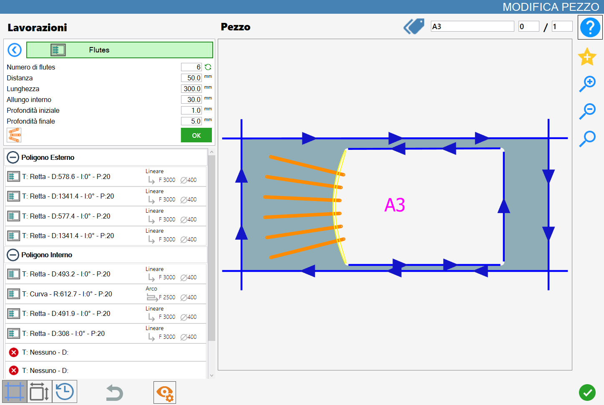
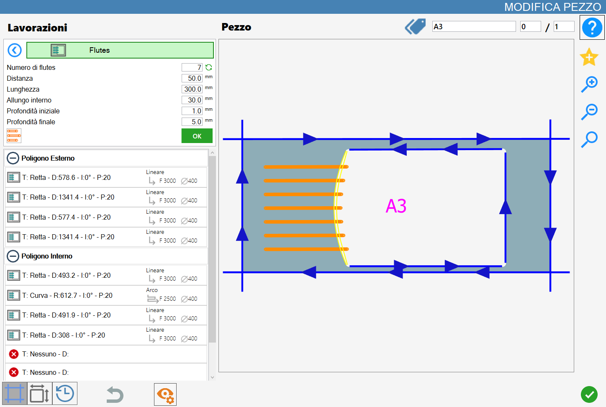
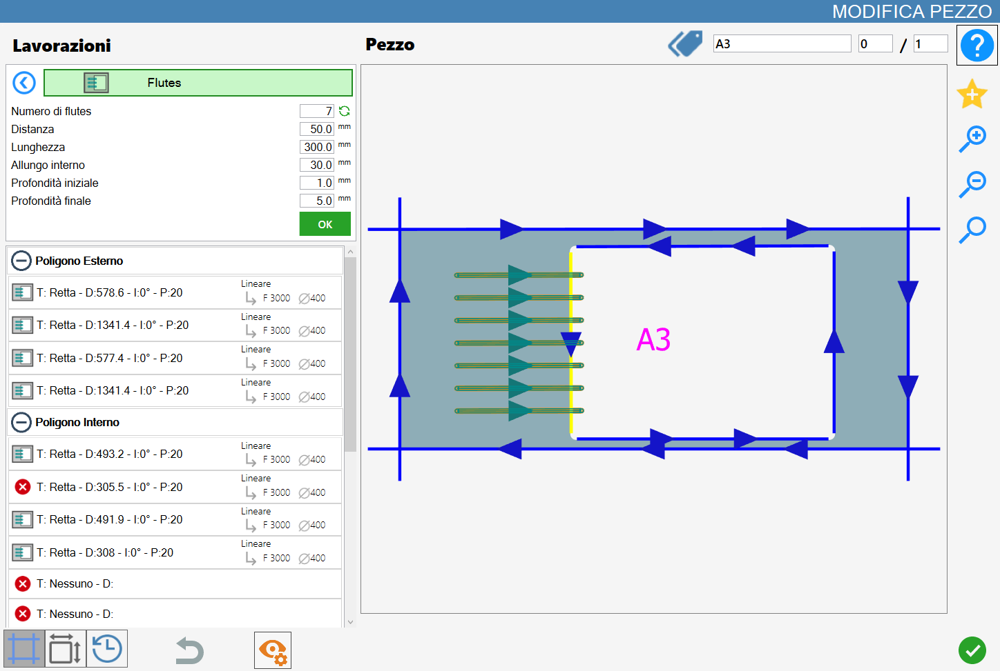

This functionality allows to apply workings with the tool of type milling cutter currently mounted on the machine in the selected cut, curve or straight that it is, in order to obtain flutes.

Parameters
The result varies depending on the value of the following parameters:
Number of drain board flutes | Indicate how many drain board flutes to apply to the current processing on the selected cut. |
Recalculate number | |
Distance | This value represents the distance between drain board flutes, takes into account the mounted instrument’s diameter. |
Length | Indicates how far the flutes will enter in the cut. |
Internal extension | Indicate how far the drain board flutes will be extended beyond the reference cut. |
Start depth | Penetration in the material in the initial point of the drainage groove. |
Final depth | Penetration in the material in the final point of the drainage groove. |
Type of drain board flutes on arcs | For the drain board flutes on curves are available three modes illustrated afterwards. |
Recalculate number
By pressing the button placed on the right with respect to the number of drain board flutes allows to fill the selected cut with as many flutes as possible, in relation to the value of the other parameters.
In the following example image it is possible to observe the result of the flute filling, in opposition to the first image at beginning chapter.

Flutes mode on arcs
When a curved cut of a polygon is selected, a new parameter will be displayed necessary to assume one among three values:
 | Radiali |
 | Arc Alignment |
 | Tangent Alignment |
Mode 1: Radial
In this mode the drain board flutes share an origin point and are perpendicular with respect to the relative tangent on the selected curved cut.

Mode 2: Arc Alignment
In this mode the flutes are parallel to each other and are aligned on arc both for the distance and for the inner extension.

Mode 3: Alignment to tangent
In this mode the drain board flutes are parallel to each other and are aligned to arch for the internal extension, while they are extended until reaching the tangent that is distant as specified by the length value.

Execution of working
NOTEIt is possible apply the working by pressing the button on the left of the suitable cut in the list of polygons.An icon red with an 'X' indicates that the process can’t be applied to the desired cut.
Once the desired result is obtained, displayed and constantly updated in the processing preview, the operator can confirm the operation by pressing the green 'OK' button, located just below the set parameters.
The drain board flutes shown in the preview will then be applied to the selected cut: their color will change to a dark green, both in the preview and subsequently in the working area, to indicate their application.

Also the cut list, located on the left side, will be updated based on the new processing applied and the parameters of the flutes.
Is possible to apply multiple workings of this type to a single cut, as long as the relating parameters do not repeat.